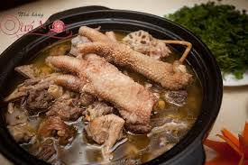

Gà Đông Tảo hầm sâm-Vị thuốc hồi phục trí lực

Gà Đông Tảo hầm sâm là món ăn bổ dưỡng, rất thích hợp để bồi bổ sức khỏe sau một tuần làm việc căng thẳng và mệt mỏi.
Được chế biến từ những bộ phận ngon và bổ nhất của gà Đông Tảo là chân, cánh và đầu hầm chung với sâm và một số vị thuốc bắc khác